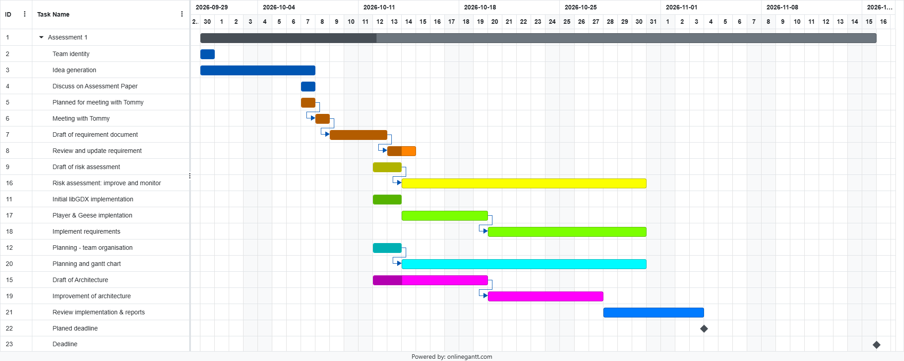
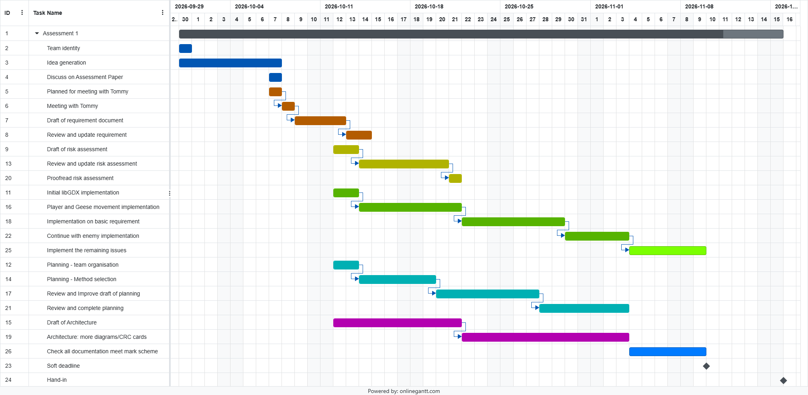
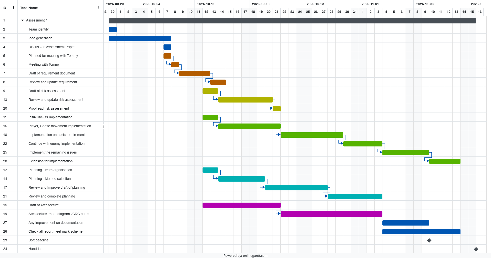

Flock n' Load
A 2D game about escaping hungry geese on a York-inspired campus. Find items, disperse the flock and get out within five minutes.
Project files
Assessment 1 deliverables in PDF format. Links open in a new tab.
- REQ1 Requirements Open PDF ↗
- ARCH1 Architecture Open PDF ↗
- PLAN1 Method Selection & Planning Open PDF ↗
- RISK1 Risk Assessment Open PDF ↗
- IMPL1 Implementation Open PDF ↗
PLAN1 Weekly plan snapshots
2026-10-14

2026-10-21

2026-10-28

2026-11-04

2026-11-12

Diagrams & CRC cards
The team
- Gianni Abene
- Jeny Bhavesh
- Oliver Earith
- Tanya Hubatenko
- Alex Lassey
- Arjun Nair
- Jamie Ramsell
- Cynthia Tam
Handover guide
How to run, read and change Flock n' Load if you are picking the project up from us.
01 Get it running
You need Git and a JDK, version 17 or newer. You do not need to install Gradle: the wrapper in the repository downloads Gradle and libGDX the first time you run it, so that first run needs an internet connection.
git clone https://github.com/jamieramsell/goose-game.git
cd goose-game
./gradlew lwjgl3:runOn Windows, use gradlew.bat in place of ./gradlew.
| Command | What it does |
|---|---|
./gradlew lwjgl3:run |
Compiles and starts the game. |
./gradlew lwjgl3:jar |
Builds a runnable JAR at lwjgl3/build/libs/goose-game-1.0.0.jar. Start it with
java -jar. |
./gradlew core:spotlessApply |
Reformats the game code with Google Java Format. |
In IntelliJ IDEA or VS Code, open the repository root as a Gradle project. Java files use two-space
indentation, set in .editorconfig.
02 How the game plays
The player survives on a generated campus map for five minutes. The round is won when the timer reaches zero and lost when the player's health does.
| Input | Action |
|---|---|
| W A S D | Move. |
| Left click | Swing the stick towards the cursor. |
| Right click | Throw a seed to the cursor. Geese walk to it and stop to eat. |
| Esc | Pause and resume. |
| F1 | Show collision boxes, for debugging. |
- Geese. Ten spawn around the player at the start. A goose with no health left is dispersed: it runs away, then comes back at full health. Half of dispersed geese drop a heart (heals a tenth of full health) or a seed bag (one seed; the player carries five at most).
- Terrain. Buildings and bushes block everyone. Water blocks the player but not the geese.
- Large goose event. Halfway through the round one large goose spawns, with double the health and harder hits. It does not come back once dispersed.
- Snack stand event. The first time the snack stand comes into view, ten red “angry” geese spawn. They are faster and do not come back. Dispersing all ten gives a bonus.
- Score. 1 point per second survived, 10 per goose, 20 per angry goose, 50 for the large goose and a 50 point bonus for clearing the snack stand event.
- Seeds. Typing a seed on the main menu gives the same map and the same goose spawn points every time. Leaving it blank picks a random one.
03 Where things live
All game code is under core/src/main/java/io/github/goose_game/.
| Path | Contents |
|---|---|
Main.java |
Entry point. Creates the shared sprite batch and the state manager. |
state/ |
The list of game states, the allowed moves between them, and the manager that switches screens. |
menu/ |
Main menu, credits, map loading screen, pause, victory and game over screens. |
game/ |
GameScreen runs the round and draws the HUD. Player, geese, the stick, seeds and
pickups each have a class here. |
mapgen/ |
Map generation, the tile types and the tile renderer. |
utils/ |
Node, the base class for everything in the scene, and DefaultSkin,
the fonts and styles for menus. |
Outside the game code:
lwjgl3/ |
Desktop launcher. Window title, size and icon are set in Lwjgl3Launcher. |
assets/ |
Sprites, texture atlases and music. The game runs with this folder as its working directory. |
index.html, styles.css, script.js,
charts/ |
This website. |
04 How it fits together
States and screens
Every screen change goes through GameStateManager. It checks the move against
GameStateGraph and throws an IllegalArgumentException if the move is not
listed. The allowed moves are:
MAIN_MENU to GENERATION, CREDITS
CREDITS to MAIN_MENU
GENERATION to GAME
GAME to TOWER_DEFENCE, PAUSED, VICTORY, LOST
TOWER_DEFENCE to GAME, PAUSED, VICTORY, LOST
PAUSED to GAME, MAIN_MENU
VICTORY, LOST to MAIN_MENUThe scene tree
Everything in a round is a Node with a position, a bounding box and named children.
Calling update or draw on a node also calls it on its children, so
GameScreen only updates and draws the root.
root
player
weapon_test the stick
seed_weapon thrown seeds are its children
enemyManager geese and dropped pickups are its childrenCode finds other nodes by these names, for example
root.get_child("player"), so renaming one means updating every lookup.
The map
The map is 64 by 64 tiles of 32 pixels. MapGenerator fills it in blocks of 4 by 4 tiles,
picking each block's terrain from the weights in TileDistribution: 80 grass, 10 water,
5 bush, 5 building. Blocks beside water are more likely to be water. It then places three points of
interest, each on a 3 by 3 patch of grass: the spawn, the snack stand and an escape point. If the
player cannot walk between all three, it generates again. Generation runs on its own thread while the
loading screen shows.
05 Making common changes
| To change | Edit |
|---|---|
| Round length | GAME_DURATION_SECONDS in GameScreen. |
| Player speed and health, stick damage and cooldown | The Player and Weapon constructor calls in
GameScreen. |
| Goose speed, health and damage | spawnEnemy and spawnLargeEnemy in EnemyManager. |
| Seed capacity and throw cooldown | The constants at the top of SeedWeapon. |
| Terrain mix | DEFAULT_DISTRIBUTION in TileDistribution. |
| Map size | BLOCKS_PER_SIDE in MapGenerator. |
Add a screen or state
- Add the state to the
GameStateenum. - List the moves into and out of it in
GameStateGraph. - Add a method to
GameStateManagerthat checks the move, sets the state and shows the screen. Copycredits()as a starting point. - Write the screen in
menu/.
Add a pickup
- Extend
Pickupand pass the image file name to its constructor. - Implement
collect(). Returntrueif the player used the item; returningfalseleaves it on the ground. - Spawn it from
EnemyManager.update, where hearts and seed bags are chosen.
Add a tile type
- Add it to
TileType, saying whether the player and the geese can cross it. - Give it a weight in
TileDistribution. If there should be exactly one on the map, make it a point of interest instead; see section 06. - Add a case for it in
TileMapRenderer.render. Without one the tile is not drawn.
Add an event
Both events are started from GameScreen.update; the large goose block is the simpler one
to copy. The HUD total of two events is written into the label text in two places in
GameScreen, so update both.
Add or change sprites
Character and effect frames are packed into assets/spritesheet.atlas from the
TexturePacker project assets/spritesheet.tps, and loaded by region name, such as
atlas.createSprites("GooseWalkLeft"). Floor tiles are in a second atlas,
assets/floorspritesheet/, and are picked by number. If you add assets made by someone
else, add the credit and licence to CreditsPage.
06 Points of interest
A point of interest, or POI, is a tile type that appears exactly once on every map. There are three
today: SPAWN, where the player starts; DEFENCE_EVENT_TILE, the snack
stand; and ESCAPE.
What the generator does for every POI
The full list of POIs is the set POINTS_OF_INTEREST in
TileDistribution. MapGenerator loops over that set, so anything in it gets
all of this without further code:
- A random position that is the same every time for a given seed.
- A 3 by 3 patch of grass around it, so it is never boxed in by water or buildings.
- Space from the other POIs, so their grass patches never overlap.
- A walkable route for the player to every other POI. A map without one is thrown away and generated again.
- A recorded position.
map.getPositionOfPoi(TileType.ESCAPE)returns the centre of the tile in world pixels.
Add a POI
- Add it to the
TileTypeenum; note hat a POI has to be passable by the player, or generation stops with anIllegalStateException. - Add it to
POINTS_OF_INTEREST. Do not give it a weight inDEFAULT_DISTRIBUTION; the constructor rejects a POI with a weight. - Draw it. Add a case to the switch in
TileMapRenderer.render. TheDEFENCE_EVENT_TILEcase, which draws grass and then the snack stand image on top, is the one to copy.
That is the whole change: two lines in mapgen/ and a draw case. The new POI is then
on every map, reachable, and never on top of another one.
Make it do something
In GameScreen.update, compare the player's position with
map.getPositionOfPoi(...) and act when they are close enough. For a POI that should
change the game's state, add the state and its moves as in section 05, then call the new
GameStateManager method from that check.
The snack stand is the existing example, though it is triggered from the renderer when the tile first comes into view, not by distance.
07 Left open for you
We built the framework and left these parts open on purpose, so that you can shape them around the Assessment 2 requirements. Each one has a starting point already in the code.
- More waves of geese.
EnemyManager.spawnWavespawns ten geese plus one for each wave so far. It is called once, at the start of the round. Thewavesandwave_timerfields are in place for calling it again on a schedule. - An escape route. Every map has an
ESCAPEtile that the player is guaranteed to be able to walk to. The round is currently won on the timer, so the tile is free to become a win condition or another objective. - A snack stand worth defending. The stand is placed on every map, drawn, and starts the angry goose event the first time it comes into view. It has no health of its own yet, so what the geese do to it is yours to decide.
- Further events. The state graph and the HUD event counter already handle two events. Section 05 lists the steps for adding another.
- New items and terrain.
PickupandTileTypeare built to be extended. Section 05 has the steps for both.